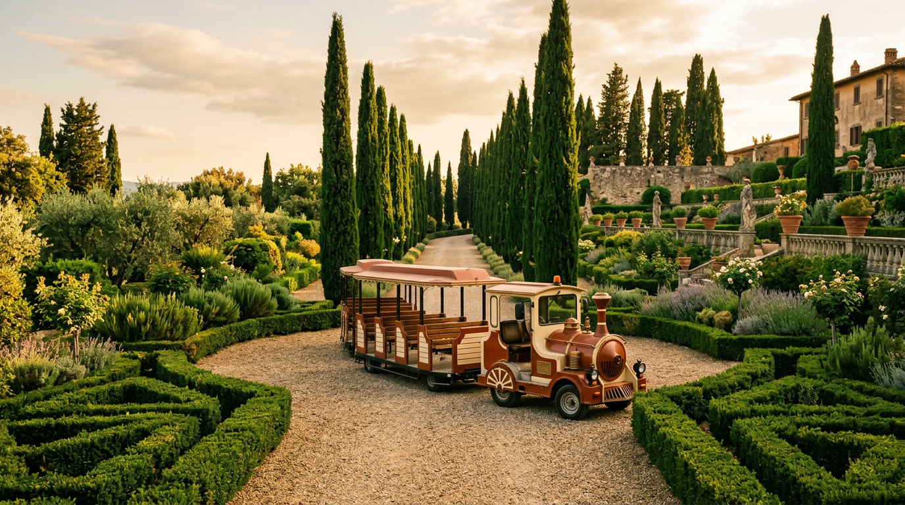

Il trenino delle Ville Pontificie — cinquantacinque ettari in un'ora.

I Giardini Barberini si estendono per trenta ettari all'interno del complesso di cinquantacinque ettari delle Ville Pontificie. Attraversarli a piedi in un pomeriggio è impossibile. Da qualche anno esiste una soluzione ufficiale: un mezzo ecologico su gomma con audioguida, che i visitatori chiamano semplicemente il trenino.
Cos'è, esattamente
Nella comunicazione ufficiale dei Musei Vaticani viene descritto come un «mezzo ecologico» a batteria: un piccolo convoglio su ruote che percorre i vialetti dei Giardini Barberini permettendo di coprire in circa un'ora la parte più significativa del parco ([Musei Vaticani — Info visita in treno, PDF](https://www.museivaticani.va/content/dam/museivaticani/pdf/visita_musei/scegli_visita/ville/Vaticano_Full_Day_treno_info_it.pdf), [Omnia Vatican Rome — Giardini Pontifici](https://www.omniavaticanrome.org/it/cards/giardini-pontifici-di-castel-gandolfo)). Non è un vero trenino su rotaia, ma il nome è ormai entrato nell'uso.
L'audioguida è disponibile in sei lingue: italiano, inglese, spagnolo, tedesco, francese e russo ([Musei Vaticani, PDF](https://www.museivaticani.va/content/dam/museivaticani/pdf/visita_musei/scegli_visita/ville/Vaticano_Full_Day_treno_info_it.pdf)). L'itinerario passa vicino al criptoportico di Domiziano, ai lecci secolari, ai parterre di fiori e al Belvedere sulla terrazza principale.
Quanto costa e come si prenota
Le formule ufficiali sono due. La prima è la Vaticano Full Day in treno: comprende ingresso ai Musei Vaticani e alla Cappella Sistina con audioguida, passeggiata nei Giardini Vaticani, viaggio in treno elettrico dedicato dalla stazione della Città del Vaticano alla stazione di Castel Gandolfo, navetta fino alle Ville Pontificie, tour dei giardini Barberini con il mezzo ecologico e ritorno in treno da Castel Gandolfo a Roma San Pietro. Prezzo intero 43,00 €, ridotto 38,00 €, gratuito fino a 5 anni compiuti ([Musei Vaticani — Full Day, PDF](https://www.museivaticani.va/content/dam/museivaticani/pdf/visita_musei/scegli_visita/ville/Vaticano_Full_Day_treno_info_it.pdf)).
La seconda formula è più snella: In treno al Palazzo Apostolico di Castel Gandolfo. Include solo il viaggio in treno da Roma San Pietro (partenza alle 11:00), il ritorno e la visita libera con audioguida al Museo del Palazzo Apostolico. Prezzo intero 20,00 €, ridotto 14,00 €, gratuito fino a 5 anni ([Musei Vaticani — Palazzo Apostolico in treno, PDF](https://www.museivaticani.va/content/dam/museivaticani/pdf/visita_musei/scegli_visita/ville/Treno_palazzo_apostolico.pdf)).
Entrambe le formule si svolgono esclusivamente il sabato, seguendo il calendario ufficiale delle Ville Pontificie, e sono prenotabili solo online dal sito museivaticani.va. Il servizio dedicato Vaticano–Castel Gandolfo è attivo tipicamente da marzo a inizio novembre, in collaborazione con il Gruppo FS Italiane ([Regione Lazio — Riparte il treno delle Ville Pontificie](https://www.regione.lazio.it/notizie/turismo/riparte-treno-ville-pontificie), [FSNews — Torna il treno delle Ville Pontificie](https://www.fsnews.it/it/focus-on/servizi/2023/3/17/trenitalia-treno-castel-gandolfo-ville-pontifice.html)).
“Su convoglio elettrico dedicato, dalla stazione ferroviaria della Città del Vaticano alla stazione di Castel Gandolfo.”Musei Vaticani — scheda ufficiale Full Day in treno
Cosa si vede davvero
Il tour nei giardini dura circa un'ora e copre le zone più iconiche del parco Barberini: i viali di lecci, i parterre geometrici a bosso, alcune vedute sul lago Albano, il criptoportico imperiale e i muraglioni della villa di Domiziano. Non si scende dal mezzo, se non nei punti fotografici indicati dalla guida. Chi cerca una visita approfondita a piedi trova nella formula pedonale dei Giardini Pontifici, sempre prenotabile via Musei Vaticani, un'alternativa più contemplativa ([Omnia Vatican Rome](https://www.omniavaticanrome.org/it/cards/giardini-pontifici-di-castel-gandolfo)).
Chi arriva in autonomia da Roma può risparmiare. La linea regionale FL4 Trenitalia parte da Termini, ferma a Castel Gandolfo dopo circa quaranta minuti e costa poco più di due euro ([Rome Spirit — Guida Castel Gandolfo 2026](https://www.rome-spirit.com/it/destinazioni/castel-gandolfo/)). Dalla stazione si sale a piedi al centro del paese in circa quindici minuti e si accede indipendentemente ai Musei del Palazzo Apostolico e ai Giardini Barberini, sempre con prenotazione sul sito dei Musei Vaticani.
Consigli pratici
Le due formule con treno dedicato sono comode ma coprono solo il sabato e vanno prenotate con largo anticipo, soprattutto in primavera e a settembre-ottobre. Il pacchetto Full Day dura tutto il giorno: partenza mattina dai Musei Vaticani, rientro a Roma San Pietro nel pomeriggio inoltrato ([FSNews](https://www.fsnews.it/it/focus-on/servizi/2023/3/17/trenitalia-treno-castel-gandolfo-ville-pontifice.html)). Scarpe comode, cappello in estate, giacca leggera per la sera anche a luglio: sui trecento metri di altitudine di Castel Gandolfo l'aria cala rapidamente dopo il tramonto.
Chi ha poco tempo e viene solo per il Palazzo Apostolico o i giardini, l'opzione a 20 euro con treno regionale FL4 è la scelta più efficiente. Chi vuole vedere tutto in una volta — Cappella Sistina, Musei Vaticani, Giardini Vaticani, treno storico e Villa Barberini — sceglie il Full Day. In entrambi i casi, la prenotazione parte da museivaticani.va.